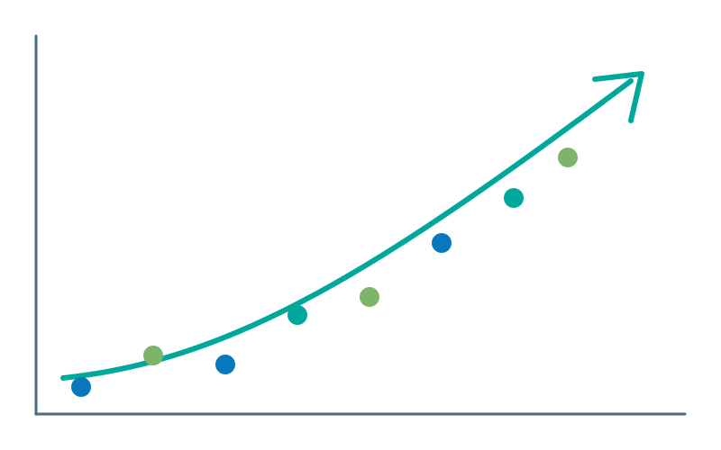

Call for Proposals now open
Share your work at Data Day 2027
Plotting What's Next · Five years forward for Central Ohio's data community
Proposals due Fri, Nov 27
Thursday, February 18, 2027
Center for Workforce Development
Columbus State Community College